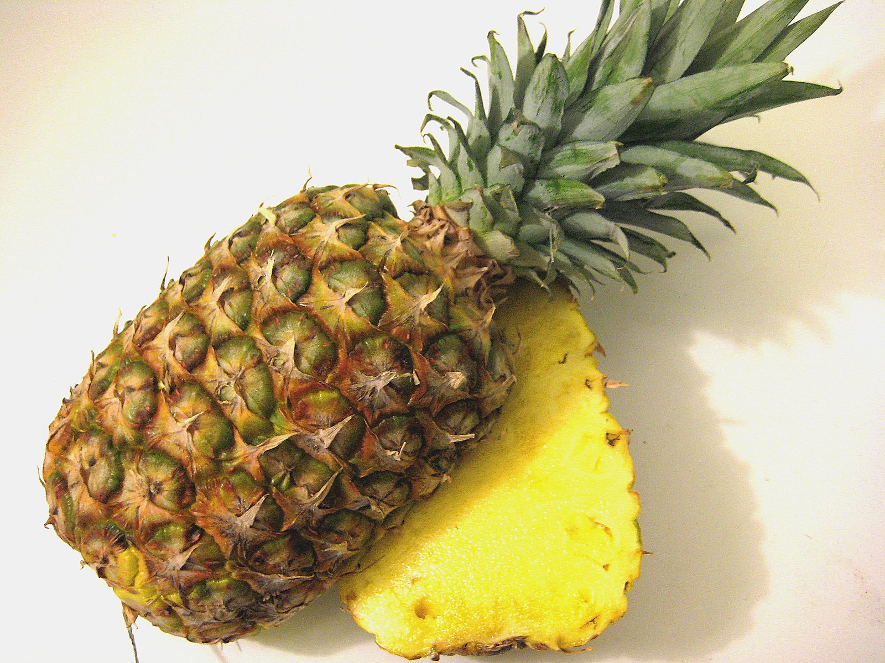
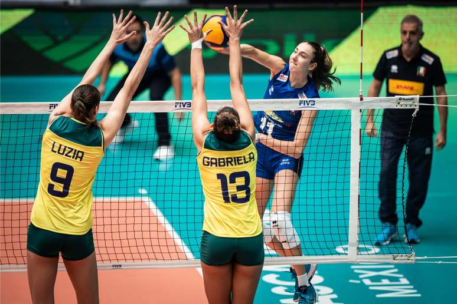
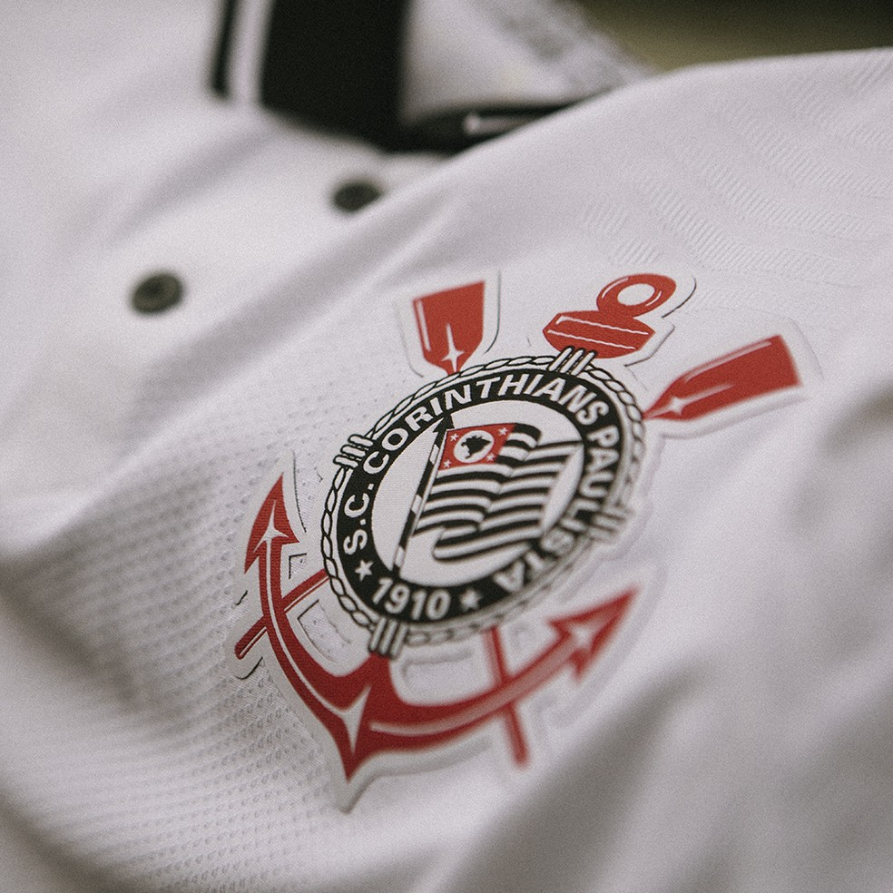

Curiosidades sobre mim
Ensino Médio
Concluí o Ensino Médio no período da pandemia.

Alergia
Tenho alergia a camarão.

Comida
Não gosto de abacaxi.

Esporte
Meu esporte preferido é o voleibol.

Torcida
Sou corinthiana, mesmo com toda minha família torcendo para o Flamengo.